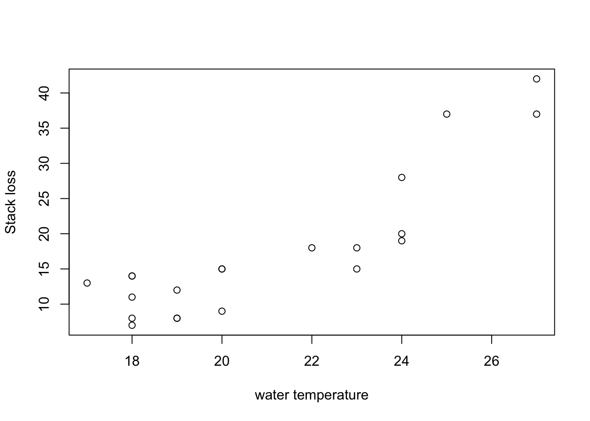

Section 8 Regression Diagnostics
The traditional principle of data analysis could be described by the following steps
- Explore the data; identify a plausible model.
- Estimate any parameters specified by the model.
- Check that the model is adequate — often by examining the discrepancy between the observed data and that predicted (or fitted) by the model — if necessary go back a step with a refined/revised model.
- See if the model can be simplified; if necessary go to step 2.
- Conclude (using the results as required).
In (multiple) regression there are many checks which can be used in step 3. These can consider the model as a whole, or be very specific by examining each observation, and the effect it has on the model.
8.1 Diagnostic Plots
The regression model is often checked by examining the residuals. Various plots are used:
A scatter plot of the response \(y\) against each of the explanatory variables \(x_j\) for \(j \in \{1, \ldots, p\}\).
A scatter plot of \(\hat\varepsilon\) against each of the explanatory variables \(x_j\) for \(j \in \{1, \ldots, p\}\). The presence of a curvilinear relationship (in this plot, or the ones above) suggests a higher-order term, perhaps a quadratic in the explanatory variable, should be added to the model. Or possibly a transformation.
A plot of \(\hat\varepsilon_i\) vs. \(\hat y_i\). If the variance of the residuals seems to increase with \(\hat y\) then a transformation may be necessary.
A plot of \(\hat\varepsilon_i\) vs. any explanatory variables not used in the model. A relationship suggests that the variable should be included.
A Q-Q plot of the residuals can be used to assess whether the residuals are normally distributed. These plots plot quantiles of the data against quantiles of a normal distribution. If the residual are normally distributed, the points in a Q-Q plot will approximately lie on a straight line. (Most inference assumes that the errors are normally distributed, though the least squares estimate for \(\hat\beta\) itself does not.) The R command to produce Q-Q plots for the normal distribution is
qqnorm().Data are often collected in time order. Even if time is not an explanatory variable, a plot of \(y\) vs. time can be of interest. It can reveal serial correlation in the data. Similarly, plotting the residuals vs. time.
A plot of \(x_j\) vs. \(x_k\) for \(j\neq k\) can also be useful. If two or more regressors are highly correlated, we say that multicollinearity is present. When this occurs the least squares estimate \(\hat\beta\) becomes numerically unstable.
Example 8.1 An example for the first type of diagnostic plot would be to
plot stack.loss against Water.Temp for the stackloss dataset:
plot(stackloss$Water.Temp, stackloss$stack.loss,
xlab = "water temperature", ylab = "Stack loss")
Clearly the stack loss increases with water temperature, but the relationship may not be linear. It may make sense to include the square of the water temperature as an additional input variable in the model.
8.2 The Coefficient of Multiple Determination
In equation (4.5) we have seen that \[\begin{equation*} \|y\|^2 = \|\hat y\|^2 + \|\hat\varepsilon\|^2. \end{equation*}\] The following lemma shows that a similar relation also holds after the sample means are subtracted.
Lemma 8.1 Assume that the fitted model includes an intercept. Then we have \[\begin{align*} \sum_{i=1}^n (y_i - \overline{y})^2 &= \sum_{i=1}^n (\hat y_i - \overline{y})^2 + \sum_{i=1}^n \hat \varepsilon_i^2 \\ &= \sum_{i=1}^n \bigl( \hat y_i - \overline{\hat y} \bigr)^2 + \sum_{i=1}^n \bigl( \hat \varepsilon_i - \overline{\hat\varepsilon} \bigr)^2, \end{align*}\] where \(\overline{y}\), \(\overline{\hat y}\) and \(\overline{\hat\varepsilon}\) are the sample means of the three vectors \(y\), \(\hat y\) and \(\hat\varepsilon\).
Proof. Define \(\mathbf{1} = (1, \ldots, 1) \in \mathbb{R}^p\). From exercise 2 on problem sheet 1 we know that \(H\mathbf{1} = \mathbf{1}\) and since \(H\) is symmetric we also have \(\mathbf{1}^\top H = \mathbf{1}^\top\). This gives \[\begin{equation} \mathbf{1}^\top (I - H) = \mathbf{1}^\top - \mathbf{1}^\top H = \mathbf{1}^\top - \mathbf{1}^\top = 0. \tag{8.1} \end{equation}\]
As we have already seen previously, we have \[\begin{align*} \hat y^\top \hat\varepsilon &= (H y)^\top (I - H) y \\ &= y^\top H (I - H) y \\ &= 0 \end{align*}\] and using equation (8.1) we also get \[\begin{equation} \mathbf{1}^\top \hat\varepsilon = \mathbf{1}^\top (I - H) y = 0. \end{equation}\] Thus, \((\hat y - \overline{y} \mathbf{1})^\top \hat\varepsilon= 0\) and using Pythagoras’ theorem as in the section about Properties of the Hat Matrix, we find \[\begin{align*} \| y - \overline{y} \mathbf{1} \|^2 &= \| y - \hat y + \hat y - \overline{y} \mathbf{1} \|^2 \\ &= \| \hat \varepsilon+ \hat y - \overline{y} \mathbf{1} \|^2 \\ &= \| \hat \varepsilon\|^2 + \| \hat y - \overline{y} \mathbf{1} \|^2. \end{align*}\] This proves the first equality.
Using equation (8.1) again, we find \[\begin{equation*} \sum_{i=1}^n \hat\varepsilon_i = \mathbf{1}^\top \hat\varepsilon = \mathbf{1}^\top (y - \hat y) = \mathbf{1}^\top (I - H) y = 0 \end{equation*}\] and thus \(\overline{\hat\varepsilon} = 0\). Since \(y = \hat y + (y - \hat y) = \hat y + \hat\varepsilon\) we also have \[\begin{equation*} \overline{y} = \overline{\hat y} + \overline{\hat\varepsilon} = \overline{\hat y}. \end{equation*}\] This completes the proof.
We can express the terms in the statement of lemma 8.1 as sample variances. For example, we write \[\begin{equation*} \mathrm{s}_y^2 = \frac{1}{n-1} \sum_{i=1}^n (y_i - \bar y)^2 \end{equation*}\] for the sample variance of \(y\). Using this notation, the statement of the lemma can be written as \[\begin{equation*} \mathrm{s}_y^2 = \mathrm{s}_{\hat y}^2 + \mathrm{s}_{\hat\varepsilon}^2. \end{equation*}\] Different from equation (4.5), the current relation is only true for models which include an intercept.
Some authors define
- \(\mathrm{SS}_\mathrm{tot} = \sum_{i=1}^n (y_i - \bar y)^2\) (where “tot” stands for “total”)
- \(\mathrm{SS}_\mathrm{reg} = \sum_{i=1}^n (\hat y_i - \overline{\hat y})^2\) (where “reg” stands for “regression”)
- \(\mathrm{SS}_\mathrm{res} = \sum_{i=1}^n (y_i-\hat y_i)^2\) (where “res” stands for “residual”)
Using this notation, the statement of lemma 8.1 becomes \[\begin{equation*} \mathrm{SS}_\mathrm{tot} = \mathrm{SS}_\mathrm{reg} + \mathrm{SS}_\mathrm{res}. \end{equation*}\]
Definition 8.1 The coefficient of multiple determination is defined to be \[\begin{equation*} R^2 := 1 - \frac{\mathrm{s}_{\hat\varepsilon}^2}{\mathrm{s}_y^2} = 1 - \frac{\sum_{i=1}^n \hat\varepsilon_i^2}{\sum_{i=1}^n (y_i - \bar y)^2}. \end{equation*}\]
Using the result of lemma 8.1, for models which include an intercept we can also express \(R^2\) as \[\begin{equation*} R^2 = \mathrm{s}_{\hat y}^2 / \mathrm{s}_y^2. \end{equation*}\] Since both numerator and denominator are positive, if is clear the \(R^2 \geq 0\). Similarly, from the definition it is clear that \(R^2 \leq 1\), so that we always have \(R^2 \in [0, 1]\). A large value of \(R^2\) indicates that the residuals are small, compared to the sample variance of the \(y_i\) and thus often indicates good model fit.
Example 8.2 We can easily compute the \(R^2\) value for the stackloss dataset
manually:
m <- lm(stack.loss ~ ., data = stackloss)
R.squared <- 1 - var(resid(m)) / var(stackloss$stack.loss)
R.squared[1] 0.9135769We can also find this value near the bottom of the output of
summary(m), listed as Multiple R-squared:
summary(m)
Call:
lm(formula = stack.loss ~ ., data = stackloss)
Residuals:
Min 1Q Median 3Q Max
-7.2377 -1.7117 -0.4551 2.3614 5.6978
Coefficients:
Estimate Std. Error t value Pr(>|t|)
(Intercept) -39.9197 11.8960 -3.356 0.00375 **
Air.Flow 0.7156 0.1349 5.307 5.8e-05 ***
Water.Temp 1.2953 0.3680 3.520 0.00263 **
Acid.Conc. -0.1521 0.1563 -0.973 0.34405
---
Signif. codes: 0 '***' 0.001 '**' 0.01 '*' 0.05 '.' 0.1 ' ' 1
Residual standard error: 3.243 on 17 degrees of freedom
Multiple R-squared: 0.9136, Adjusted R-squared: 0.8983
F-statistic: 59.9 on 3 and 17 DF, p-value: 3.016e-09One problem with the \(R^2\) value is, that it always increases when another input variable is added to the model. Thus, the \(R^2\) value cannot be used to compare model fit for models with different numbers of variables. An attempt to compensate for this effect is the adjusted \(R^2\) value:
Definition 8.2 The adjusted \(R^2\) value is given by \[\begin{equation*} R^2_\mathrm{adj} := 1 - \frac{\frac{1}{n-p-1}\mathrm{s}_{\hat\varepsilon}^2}{\frac{1}{n-1}\mathrm{s}_y^2} = 1 - \frac{n-1}{n-p-1}(1 - R^2). \end{equation*}\]
The value \(R^2_\mathrm{adj}\) is always smaller than the \(R^2\) value, and \(R^2_\mathrm{adj}\) can be (slightly) negative.
Example 8.3 The adjusted \(R^2\) value for the stackloss dataset can be found as follows:
n <- nrow(stackloss)
p <- ncol(stackloss) - 1
R.squared.adj <- 1 - (n - 1) / (n - p - 1) * (1 - R.squared)
R.squared.adj[1] 0.8983258We can also find this value near the bottom of the output of
summary(m), listed as Adjusted R-squared.
Example 8.4 As suggested in example 8.1, we may want to include a new quadratic term in the stackloss dataset:
m2 <- lm(stack.loss ~ . + I(Water.Temp^2), data = stackloss)
summary(m2)
Call:
lm(formula = stack.loss ~ . + I(Water.Temp^2), data = stackloss)
Residuals:
Min 1Q Median 3Q Max
-4.1217 -1.5205 -0.3091 0.9753 6.0554
Coefficients:
Estimate Std. Error t value Pr(>|t|)
(Intercept) 57.73727 46.08487 1.253 0.22826
Air.Flow 0.53683 0.14708 3.650 0.00216 **
Water.Temp -7.62030 4.10441 -1.857 0.08188 .
Acid.Conc. -0.09697 0.14371 -0.675 0.50946
I(Water.Temp^2) 0.21224 0.09738 2.179 0.04459 *
---
Signif. codes: 0 '***' 0.001 '**' 0.01 '*' 0.05 '.' 0.1 ' ' 1
Residual standard error: 2.936 on 16 degrees of freedom
Multiple R-squared: 0.9334, Adjusted R-squared: 0.9167
F-statistic: 56.02 on 4 and 16 DF, p-value: 3.293e-09As expected, the \(R^2\) value has increased here (from 0.9136 to 0.9334). Since the adjusted \(R^2\) value has also increased (from 0.8983 to 0.9167), the extended model may be better than the original model.